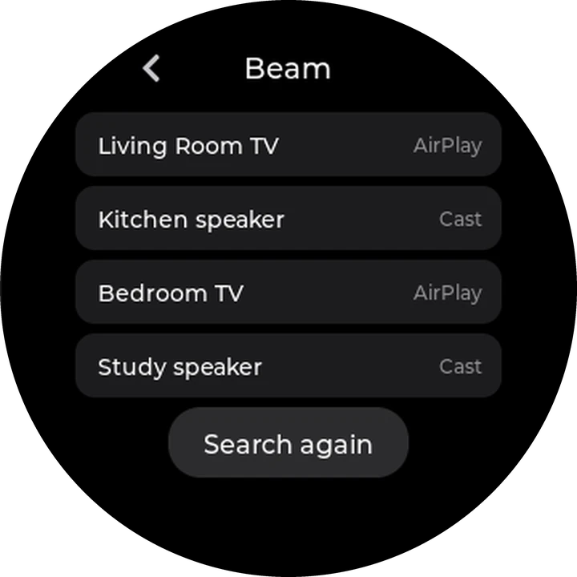
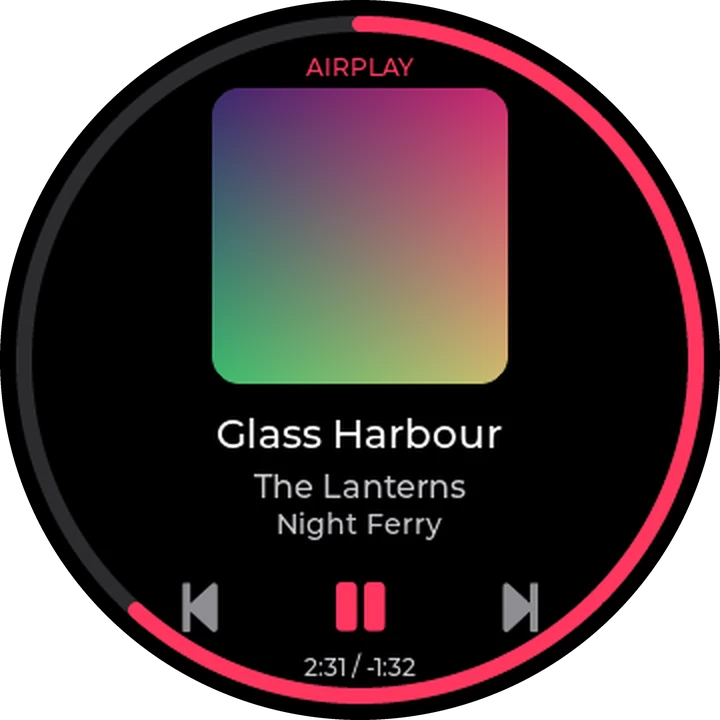
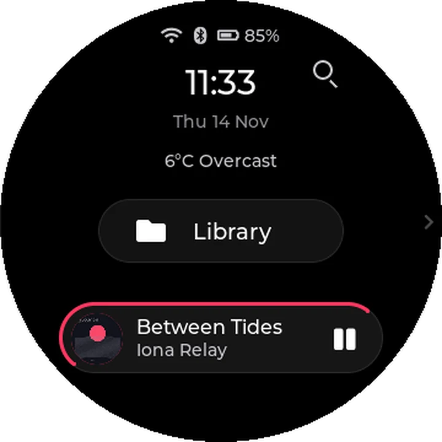
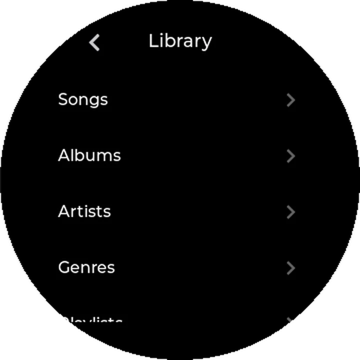
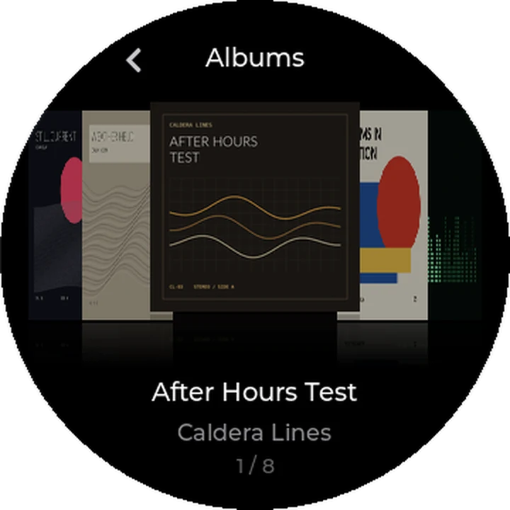
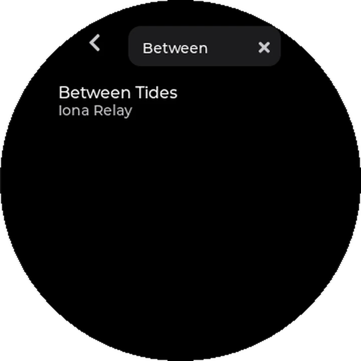
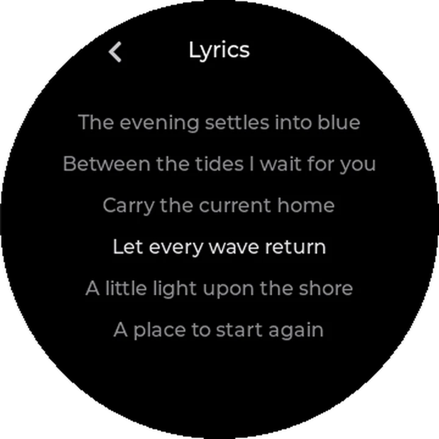
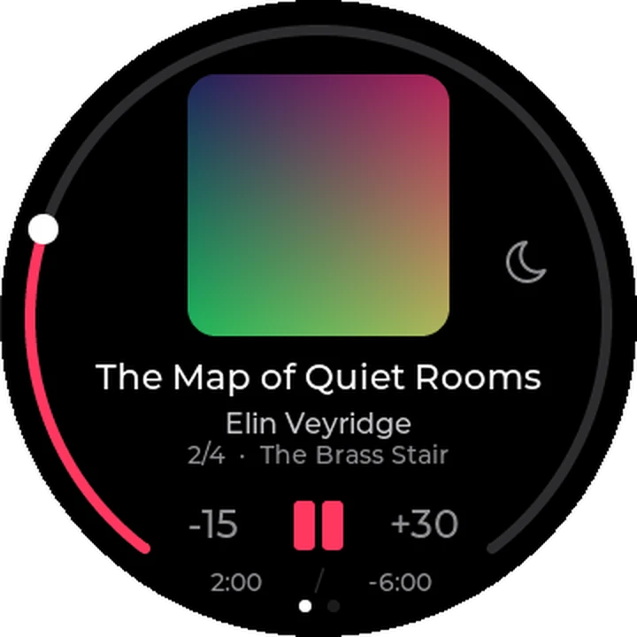
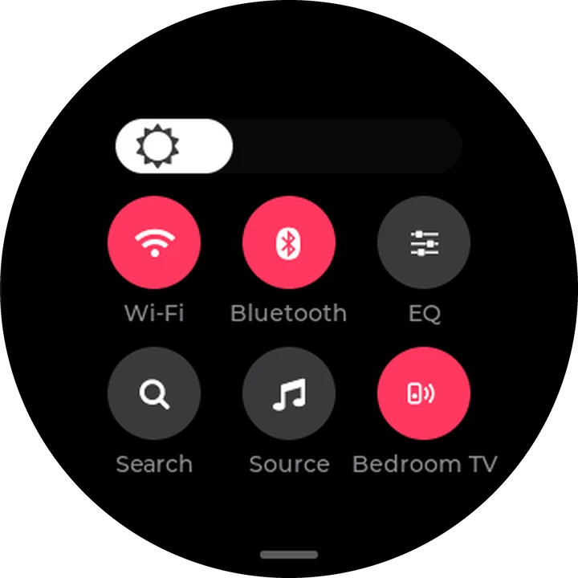

diskOS for the FiiO Snowsky Disc
Made round, from the centre out.
A new face for the FiiO Snowsky Disc, made for its round screen. Your music sits in the middle of the circle, and Beam sends it to the Cast and AirPlay speakers and TVs in your home.
Free and open source. Install from Linux x86-64, macOS on Apple Silicon or Windows 10/11 x64. Flashing takes about 20 minutes. Choose the stock interface for the next boot in Settings > Device > Default UI.
Side A The tracklist
Ten things you can do.
Each one made for the circle. Scroll, and the disc plays them in order.
- 01

Beam
Send what is playing to a speaker or TV on your Wi-Fi. Pick a Cast or AirPlay device, enter the PIN if the TV asks for one, and the Disc's controls and volume drive that device while it plays.
- 02

AirPlay Receiving
Choose AirPlay Receiving as a source, then pick the Disc from your iPhone or Mac. The track, artist and cover appear on the round screen. On firmware V2.40 and V2.57.
- 03

Home
The time, the date and your song, at a glance. In halo, the border around your song fills as it plays.
- 04

Library
A big library, one thumb. Run your finger around the rim to fly through a long list, or tap A-Z and land on the letter you want.
- 05

Cover Flow
Some albums you know by their cover before you know their name. Flip through the artwork, tap the one in the middle to open it, or hold it to play.
- 06

Search
Remember one word of the title? Search by song, artist or album from Home or Quick Settings, and play what you find.
- 07
Now Playing
Playback controls and your place in the song, together on the round screen. Play, pause, skip and seek without leaving the screen.
- 08

Timed lyrics
Sing along. Timed lyrics follow the song, and the line you are on lights up. Lyrics beside the song or inside it work offline; missing words can be looked up over Wi-Fi.
- 09

Audiobooks
.m4b audiobooks get their own home in Library > Books. Jump between chapters and pick up at your saved position.
- 10

Quick Settings
Pull down from the top edge: brightness, Wi-Fi, Bluetooth and EQ, together in one place. Add a Beam tile to send the music to a speaker or TV. Change what you need and get straight back to listening.
Also on the record: Last.fm scrobbling, playlists with M3U import and export, Up Next, Song Info, a sleep timer, your own picture or animated GIF as the screensaver, editable Disc and Bluetooth names, and signed app updates over Wi-Fi with an optional update check. Swipe up from the bottom edge of the screen to go straight Home. Local playback uses the Disc's stock audio engine. Beam plays through the selected receiver.
Side B Eight themes
One circle.
Eight worlds.
Eight themes bring different fonts, colours and layouts across the interface, each in dark or light. Your music and settings work the same in all of them. On the Disc: Settings > Display > Theme.
Keep scrolling to change theme
-
halo
Rounded controls, a cover-centred Now Playing view, a large Home clock and border progress around the now-playing island.
Between Tides Iona Relay, from Still Current
-
something
Dot-matrix clock and titles, a steady colon, dot arrows and a dotted progress ring.
Open Circuit Decimal Choir, from Soft Errors
-
hi-fi
Faceplate rows with amber press lights, a segmented clock and bezel-tick progress.
Amber Window Caldera Lines, from After Hours Test
-
terminal
Monospace readouts, a blinking header cursor, aligned playlist durations and a straight seek bar.
Return Signal Port Meridian, from Local Echo
-
bauhaus
Bold capitals, geometric row bullets, artwork in the left half of Now Playing and a separate queue-position line.
Red Interval Ada Assembly, from Forms in Motion
-
blueprint
Figure numbers, row crosshairs, dimension marks and cover crop marks.
Section Three Datum Season, from Measured Air
-
stone
Uneven pebble controls, a split clock and a fading progress arc.
Slow Strata Cairn Loom, from Weather Held
-
zine
Taped headers, pressed-row underlines, typewriter text and cut-out clock digits.
Leave A Mark Cut Paper Union, from Margin Songs
Put diskOS
on your Disc.
Install from Linux x86-64, macOS on Apple Silicon or Windows 10/11 x64. Flashing takes about 20 minutes. The installer can download and verify the official FiiO firmware for you. Before flashing, it saves a stock restore image built from that firmware. Choose Settings > Device > Default UI > Stock to use the stock interface on the next boot. Works with stock firmware V2.09, V2.28, V2.40 and V2.57; AirPlay Receiving needs V2.40 or V2.57. Playlist and book playback may fail on V2.09.
The eight records around the screen show the Vinyl screensaver in each theme. On the Disc, cover art turns about once every 27 seconds while playing, with the screensaver visible and the screen on.